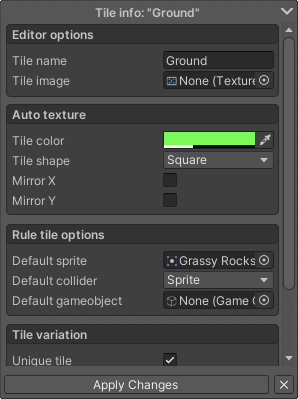
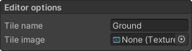
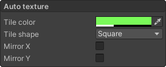
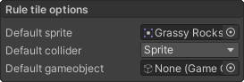
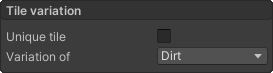
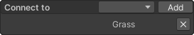

Tile inspector
The tile inspector is the place where you can change the settings of the Tiles you created in the Tile drawer window. To edit a tile’s settings, just select it from the tile drawer. After you selected the tile, the tile inspector window will automatically appear in the bottom left corner of the Editor window.
The options in the tile inspector are divided into different categories. Some of the options are the same as in regular rule tiles, but there are also quite a few options which are specific to Better rule tiles.
After you’re done changing the settings of the tile, you can click the Apply changes button to see the changes take effect. Alternatively you can also switch to another tile to see your changes take effect.

Editor options
The settings present in this category change how the tile looks in the editor:
- Tile name - The name of the tile in the editor, and after the tile has been exported.
- Tile image - This option only affects how the tile looks in the editor. When leaving this empty, the tile will appear based on the settings in the Auto texture category. But if you want to add a custom preview image for your tile in the editor, you can add a texture here, and that’s how the tile will appear in the editor.

Auto texture
If you haven’t specified a Tile image in the Editor options category, than you can change how the automatic preview texture looks by changing the parameters in this window:
- Tile color - Here you can specify the color and transparency of the preview texture.
- Tile shape - Here you can specify the shape of the tile. The default value of this is also affected by your current Grid settings, so for square grids the default value will be Square, and for isometric grids, the default value will be Isometric. The shapes you can choose from are the following:
- Square - Default for the square grid type.
- 1x1 Slope - A slope for stairs and such.
- 2x1 Slope Bottom - The top side of a 2 tile wide slope.
- 2x1 Slope Top - The bottom side of a 2 tile wide slope.
- Diamond - Square rotated by 45 degrees.
- Isometric - Default shape for isometric tiles.
- Hexagon Pointed Top - Default tile shape for the corresponding grid type.
- Hexagon Flat Top - Default tile shape for the corresponding grid type.
- Circle - A circle, if you ever need one.
- Mirror X - Mirrors the shape horizontally.
- Mirror y - Mirrors the shape vertically.

Rile tile options
These settings change how the tile will behave when placed on the tilemap, if none of the Tiling rules match the place where the tile is placed. Apart from the default sprite, these settings also affect how the placed tiling rules behave, unless they’re overridden in the Grid cell inspector or the Sprite override settings.
- Default sprite - This sprite is the fallback, if none of the Tiling rules match the place where the tile is placed.
- Default collider - The collider type of the tile when placed, same as a regular rule tile.
- Default gameobject - Gameobject instantiated with the tile when placed.

Tile variation
In the tile variations category, you can change whether that tile is unique or a variation of another tile. The default is unique, this is the default, and this way the tile will not be affected by other tiles. If the tile is not unique, it is a variation of another tile, which means it will fill all the missing Tiling rules which are not present in this tile, but present in the tile you specified in the variation of field, and add those Tiling rules to this tile.
- Unique tile - Is this tile unique or a variation of another tile?
- Variation of - The tile to fill in the missing Tiling rules from.

To see a specific example on how this feature works, look at the Examples provided with the package.
Note
If a tile is a variation of another tile, it doesn’t mean they’ll connect to each other, it just fills in the missing rules so you don’t have to. If you want tiles to connect with each other, look in the Connect to category.
Connections
The Connections or Connect to category provides you a way to make two separate tiles connect to each other in a simple way.
To add a tile to this list just simply select the tile from the dropdown, than click the Add button to add it to the list. All tiles added to the list will appear under the category. To remove a tile, just simply click the X button next to it.

When a tile #2 is added to tile #1’s connection list, #1 will treat #2 as if it was the same tile, so it’ll connect to it the same way it’d connect to itself. But this connection is not mutual, even tho #1 connects to #2, number #2 will still treat #1 as a different tile. If you want both of them to connect to each other, you also need to add tile #2 to tile #1’s connection list.
To see this behaviour inside the tool, look at the Examples provided with the package.
Custom properties
Custom properties are a way to store information in tiles. This could be useful for a number of things, for example for storing how fast the player can walk on the tile.
To add a property just simply click on the Add button. This will add a new property to the list, which you can change the name, the variable type, and the value. To remove a property just simply click on the X button next to it.

The properties you add here can be later accessed by scripts. Look at the Custom properties page to learn more, or look at the Examples provided with the package.